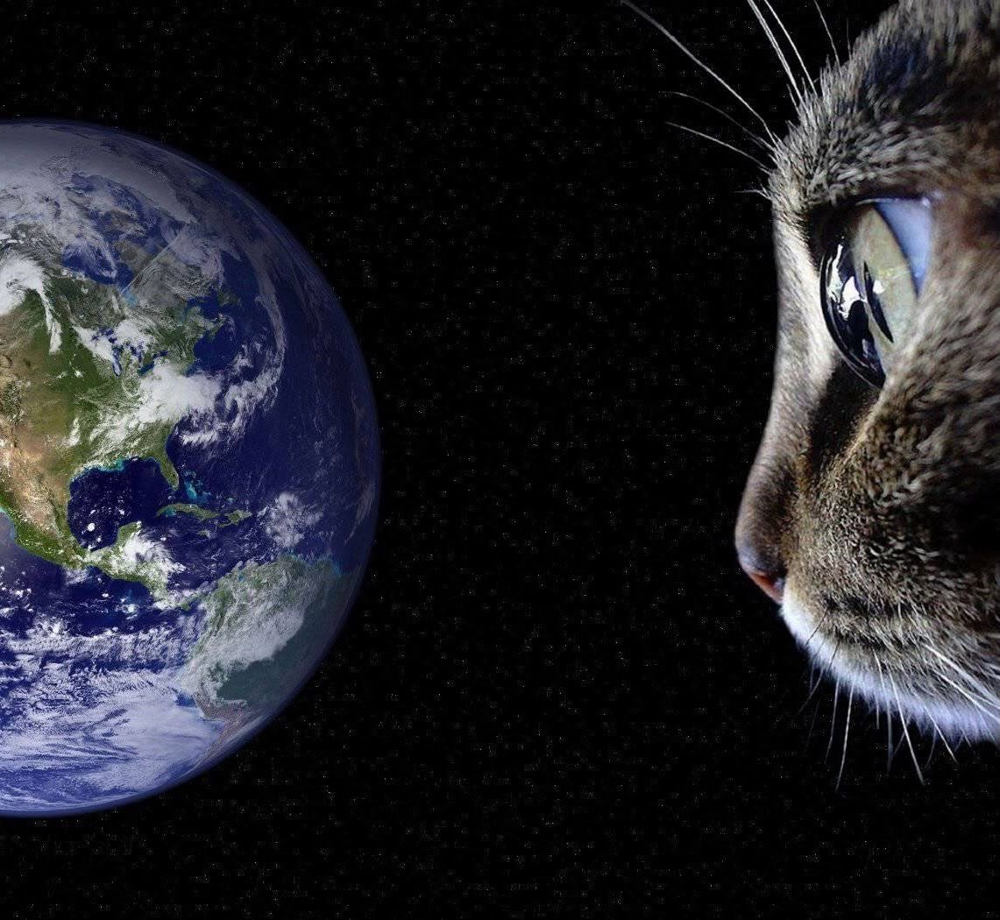
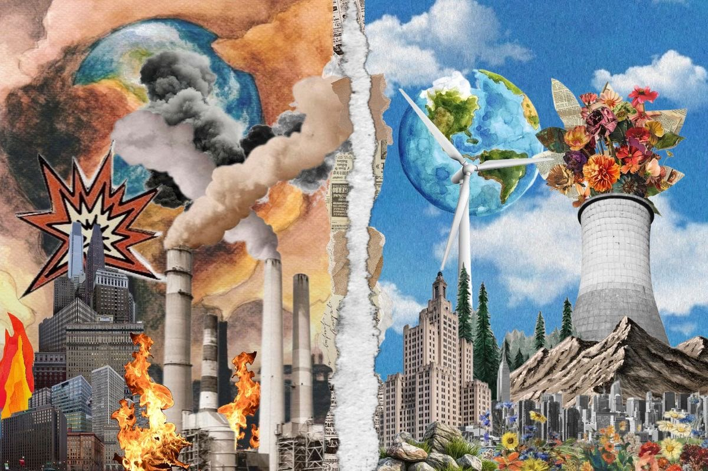

El reciclaje se define como el proceso mediante el cual recolectamos materiales que ya cumplieron su vida útil para transformarlos en nuevos productos, evitando que se conviertan en basura desechada en vertederos, ríos, calles o suelos contaminados. Es una de las bases de la economía circular y forma parte fundamental de la regla de las tres R: Reducir, Reutilizar y Reciclar. A diferencia de simplemente tirar los residuos, el reciclaje implica separar correctamente cada material, transportarlo hacia plantas especializadas y realizar tratamientos físicos, químicos o biológicos para regenerar la materia prima y volverla a utilizar en la fabricación de artículos nuevos. Los materiales más frecuentes que se pueden reciclar son el papel, el cartón, el vidrio, el aluminio, otros metales, algunos plásticos, textiles y residuos orgánicos como los restos de comida para elaborar compostaje.
reciclar es una manera sustentable de cuidar el planeta, la economia y a las personas, existen diferentes tipos de reciclaje pero cada uno ayuda a cuidar el medio ambiente y salvar nuestro planeta.
la mayoria de los productos fabricados son con PET comumente conocido como(Polietilentereftalato).
el cual es un polímero que se obtiene mediante un proceso con ácido tereftálico y monoetilenglicol.
que podria sonar dañino pero es un plástico reciclable, liviano y resistente, usado ampliamente en envases, es el plástico más reciclado del mundo, con un alto nivel de sostenibilidad.
tiene ventajas como su moldeabilidad y desventajas como su vulnerabilidad al calor.

La importancia del reciclaje radica en que protege el medio ambiente, reduce el consumo de materias primas vírgenes, disminuye el gasto energético y ayuda a combatir la contaminación ambiental. Cuando reciclamos, evitamos la sobreexplotación de recursos naturales como árboles, minerales y agua; además, reducimos la cantidad de gases de efecto invernadero que se liberan durante la fabricación de productos nuevos y la descomposición de basura en vertederos.
el reciclaje no solo es un proceso de recoleccion y procesamiento tambien implica el diseño de productos para que puedan ser reciclados.
el proceso del reciclaje varia dependiendo de el tipo de material que se este reciclando.
para saber mas acerca del reciclaje puedes ver videos o instrucciones de como cuidar al planeta y a ti mismo.